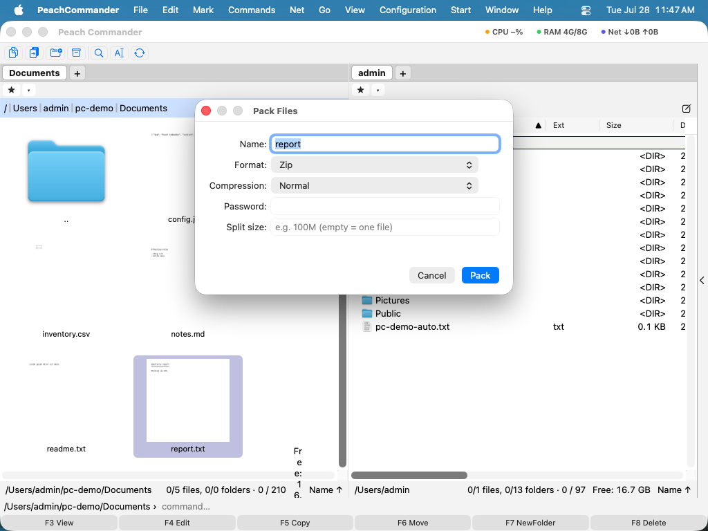

Working with archives
Peach Commander treats archives like folders. You can step inside a ZIP, TAR, or other supported archive, browse its contents, and copy files out — all without unpacking to disk first. When you want to create an archive, the Pack command bundles your selection into a ZIP, 7z, TAR, or other format, with optional encryption and split volumes. This is handy for bundling files to send, shrinking a folder for storage, or peeking inside a download before you commit to extracting it.
Browse an archive as a folder
- In a panel, move the cursor to an archive file (for example a
.zipor.tar.gz). - Press Enter or Ctrl+PageDown to step inside, just as you would open a folder.
- Navigate the contents normally. Press Backspace or Ctrl+PageUp to go back up and leave the archive.
- To pull files out, select them and copy (F5) to the other panel.
 (Figure: An opened archive shown as an ordinary folder listing, with its files ready to copy out.)
(Figure: An opened archive shown as an ordinary folder listing, with its files ready to copy out.)
ZIP, TAR, and gzip-compressed TAR are read directly. Other formats such as CPIO, ISO, CAB, LZH, XAR, and PAX are read through built-in system tools. Encrypted ZIP archives (both classic and AES) can be opened when you supply the password.
Pack files into a new archive
- Select the files and folders you want to include in the active panel.
- Choose File ▸ Pack… or press Alt+F5. (To pack and then delete the originals, use Alt+Shift+F5.)
- In the dialog, choose the archive format (ZIP, 7z, TAR, tar.gz, bzip2, xz, or RAR), the compression level, and where to save it.
- Optionally turn on AES-256 encryption and set a password, or split the archive into fixed-size volumes.
- Confirm to create the archive.

(Figure: The Pack dialog, where you pick the format and set encryption and split-volume options.)Unpack or test an archive
- Put the archive you want to extract into the active panel and the destination folder in the other panel.
- Choose File ▸ Unpack… or press Alt+F9, then confirm the destination.
- To check an archive for damage without extracting it, choose File ▸ Test Archive.
Edit a ZIP in place
You can add or remove files inside an existing ZIP without unpacking it. Open the ZIP as a folder, then copy files in or delete files as usual — the change is written straight back to the archive.
Shortcuts
| Action | Shortcut |
|---|---|
| Enter archive under cursor | Enter or Ctrl+PageDown |
| Leave archive (go up) | Backspace or Ctrl+PageUp |
| Pack | Alt+F5 |
| Pack and delete originals | Alt+Shift+F5 |
| Unpack | Alt+F9 |
Notes
- Packing to 7z, xz, bzip2, and RAR relies on external tools. RAR in particular requires the proprietary RAR program to be installed; without it, that format is unavailable.
- Editing a ZIP in place rewrites the whole archive, so file modification timestamps inside it are not preserved.
- Very large individual members are capped at 512 MiB when extracting. Extraction can be cancelled while it runs.
- ZIP64 archives open like any other, so an archive with more than 65,535 items or larger than 4 GB browses normally; the per-member extraction limit above still applies.